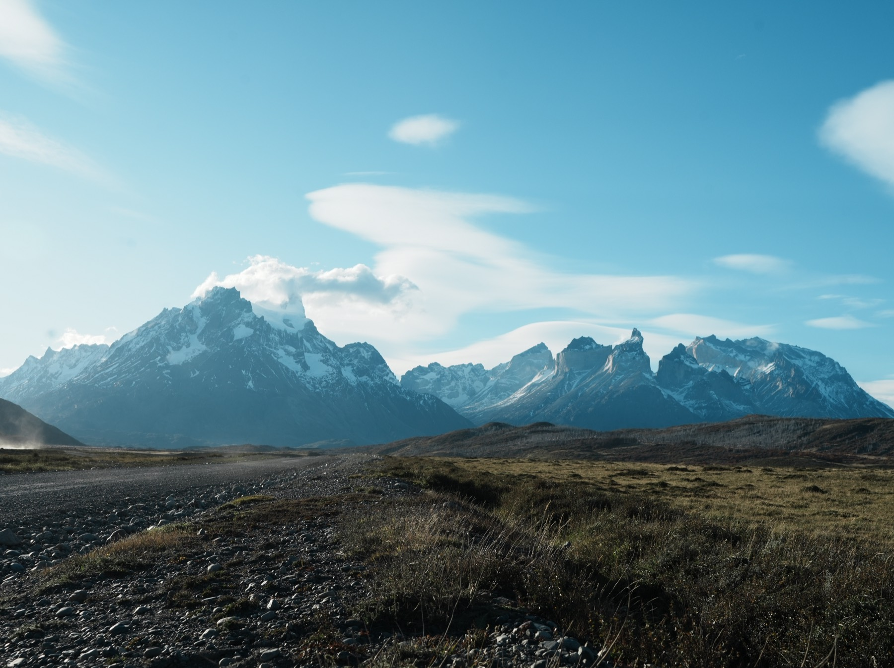
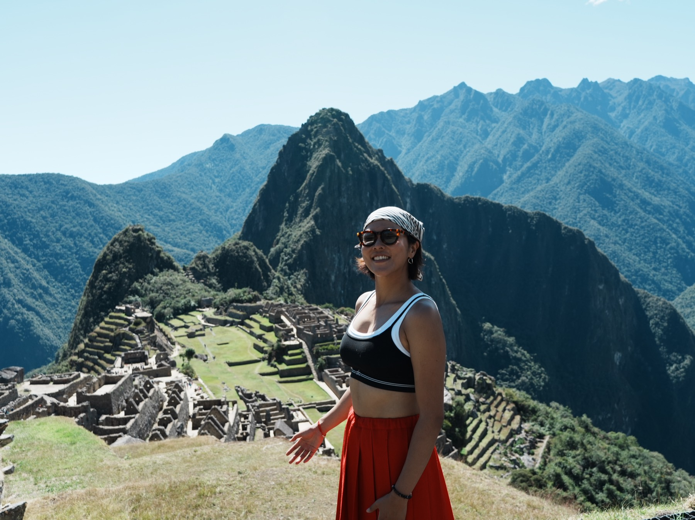

PILOT ✅
PILOT ✅Chapter 01 · Apr 22 — May 4
North America
北美 · 旅程的起點
Rattlesnake 崖邊開場 · 「當你覺得害怕,為什麼還要嘗試」· Pike Place ✕ The Chief · 走出舒適圈

PILOT ✅Chapter 02 · May 5 — May 20
Patagonia
巴塔哥尼亞 · 世界的盡頭
Torres del Paine 滿版開場 · 「這座山 teach you to be humble」· 三塔 ✕ 旅人相遇 · 金色大地畫廊
 PILOT ✅
PILOT ✅Chapter 03 · May 21 — Jun 16
Brazil
巴西 · 大嘴鳥的國度
伊瓜蘇棧道開場 · 五城完整版(聖保羅/里約/伊瓜蘇/潘塔納爾/千湖沙漠)· 大嘴鳥 ✕ 剛剛好 · 銀河畫廊

PILOT ✅Chapter 04 · Jun 18 — Jul 7
Peru
秘魯 · 眾神與織者之地
馬丘比丘紅裙開場 · Siguas 圖騰博物館之牆 · 太陽祭 ✕ 紅牆 ✕ 紅鶴 · 章末「人生本來就沒有答案」(利馬照片待補)
DEMO
Design System
Peru Motifs
秘魯圖騰元素庫
博物館之牆 · 織品小人 frieze · 金句圖騰 — 靈感:阿雷基帕博物館 Siguas 火烙杖
LIVE 線上版
現行版本 · 已上線
Guide v1
目前公開的 guidebook(卡片式 + 心得自動同步)
18 篇心得已上架 · 全章 pilot 完成後將由雜誌版取代